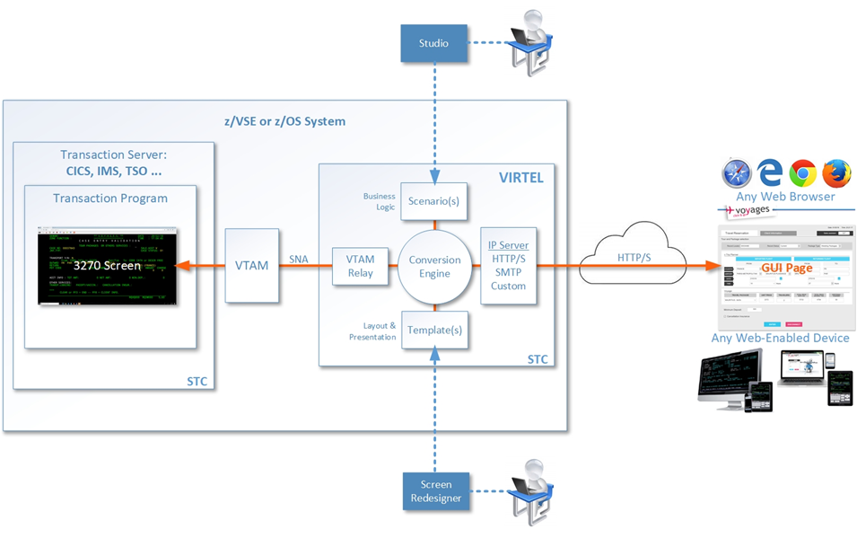

Getting Started with Virtel

Version : 4.59
Release Date : 12 July 2019. Publication Date : 23/12/2020
Syspertec Communication
196, Bureaux de la Colline 92213 Saint-Cloud Cedex Tél. : +33 (0) 1 46 02 60 42
NOTICE
Reproduction, transfer, distribution, or storage, in any form, of all or any part of the contents of this document, except by prior authorization of SysperTec Communication, is prohibited.
Every possible effort has been made by SysperTec Communication to ensure that this document is complete and relevant. In no case can SysperTec Communication be held responsible for any damages, direct or indirect, caused by errors or omissions in this document.
As SysperTec Communication uses a continuous development methodology; the information contained in this document may be subject to change without notice. Nothing in this document should be construed in any manner as conferring a right to use, in whole or in part, the products or trademarks quoted herein.
“SysperTec Communication” and “VIRTEL” are registered trademarks. Names of other products and companies mentioned in this document may be trademarks or registered trademarks of their respective owners.
What is Virtel?
Virtel is a host-based protocol converter that runs as a started task on the mainframe. At the core of Virtel is the Virtel Engine which sits between host applications and external environments such as the web or another external server. Virtel supports the following standard protocols - TCP/IP, SMTP, HTTP/S, SOAP, MQ-SERIES, SNA, 3270, ICAL (IMS) and the inherited protocols - X25, XOT, XTP, LU 6.2 to interface between host applications and external services.
Virtel provides three models:
Web Access (VWA)
Web Modernization (VWM)
Web Integration (VWI)
VIRTEL Web Access is a set of functions which provides access to mainframe 3270 legacy applications via the user’s browser window. In the VWA model the Virtel Engine comprises of two components, a HTTP server and a VTAM component serving the back-end VTAM legacy applications, pertaining to operate as an LU2 device(s), as shown in the following diagram:
 VIRTEL Web Access
VIRTEL Web Access
VIRTEL Web Modernization allows the presentation of 3270 host applications to be modified, without modifying the application itself. The presentation can be adapted to a format (HTML, XML, etc.) suited to the requester, while hiding the details of navigation within the 3270 transactions.
The modernization process involves customizing the Virtel templates in order to change the way in which Virtel presents the host application data to the end-user. Virtel comes with two tools called Virtel Screen Redesigner and Virtel Studio, to assist developers with the modernization process.
The following diagram illustrates the VWM architecture:
 VIRTEL Web Modernization
VIRTEL Web Integration allows a host application to take maximum control of its web interface, for example through web services.
VWI enables an application to create a dynamic dialog between its transactions and web applications through the creation of interactive bidirectional dialogs across the Internet between host (CICS, IMS, Ideal, Natural, etc.) and server-based applications using XML/HTML web services or other communication procedures.
Virtel provides a proprietory scripting language, that is used in Virtel Scenarios to implement these dynamic dialogs, as shown in the example below:
 VIRTEL Web Integration
VIRTEL Web Integration
Release Notes
Hardware and Software Requirements
Virtel requires the following hardware and software:
Component |
Server side |
Client side |
|---|---|---|
Web Access Web Modernization |
Any supported IBM zSystem Any supported version of z/OS |
Any supported version of one of the following browsers under any operating system (JavaScript enabled)
|
Virtel Screen Redesigner |
Microsoft Windows |
|
Virtel Studio |
Microsoft Windows |
On the server side, the following elements are also required:
Authorized Library: Virtel initialization program VIR6000 must run from an APF-authorized library.
High-Level Assembler: High-Level Assembler is required to assemble the VIRTCTxx configuration module and Virtel Scenarios
The REGION specified in the Virtel startup JCL depends on the number of terminals defined in the configuration, see the Installation Guide for more details.
Support for the cryptographic functions of VIRTEL requires ICSF Version HCR7740 or later.
TCP/IP server stack
Space requirements:
Dataset |
DSORG |
CI/BLKSIZE |
Size (TRKS) |
|---|---|---|---|
ARBO |
VS |
4096 |
IX=1 DATA=1 |
CNTL |
PO |
3120 |
75 |
HTML |
VS |
32768 |
IX=1 DATA=3 |
HTML.TRSF |
VS |
32768 |
IX=5 DATA=75 |
LOADLIB |
PO |
32760 |
150 |
MACLIB |
PO |
3120 |
30 |
SAMP.TRSF |
VS |
32768 |
IX=5 DATA=275 |
SAMPLIB |
PO |
3120 |
150 |
SCRNAPI.MACLIB |
PO |
3120 |
20 |
SERVLIB |
PO-E |
4096 |
45 |
STAT |
PS |
12400 |
15 |
SWAP |
VS |
8192 |
IX=1 DATA=1 |
What’s new in this release?
Install JCL
5725 Correct JCl for Codepage IBM0274
Include code page in installation process.
5735 Add VIR0TNET
Include VIR0TNET module in installation.
SAMPLIB changes
5728 Correct Virplex JCL
Sample JCL changed to make VIRHTML shareable
Migration considerations
V4.59 None.
There have been no changes to the ARBO which would require migration from V4.58 or V4.57. Customers who are migrating from older releases should review the “What’s new in Virtel V4.XX” newsletters to determine applicable migration actions for new distributed features. Depending on requirements not all actions may be applicable. These newsletters are available online at https://virtel.readthedocs.io/en/latest/
Fixes, changes and new features
5705 Minor presentation corrections
Correct problem in processing “global-settings” of w2hparm.js
Correct problem in centrailzed backup.
Correct problem of SESSKEY= synchronization
New help pages have been added for the Version 2 of VWH settings.
5707 Correct Keybaord Macro settings
Macro keyboard (Hotkey Mapping) now correctly trigger assigned macros
5708 Capture windows opens in background
Window foreground/background bug with IE11 in capture processing
5716 Centralized settings and Hotkey improvements
Improved centralized parameter support. Prevent blocking in certain conditions.
HotKey modification. Userid must be present.
Centralized processing now correctly tests security context.
5719 Correct bug in DECLARE$
Fix single quote issue with DECLARE$ instruction
5724 Password Bug
In security type=4 (HTML) some non-alphnumeric characters where incorrectly translated.
5726 Userparm modification
Userparm updates are no longer tied to security context.
5729 Long Poll Syncfronization
Correct code to avoid potential out-of-sync long poll response. Cause block of session
5730 ASRA Abend in USERPARM
Avoid ASRA Abend when processing idential user parm updates for the same user.
5733 API Enhancements
New methods added:
getAjaxSession getVirtelSession removeOnLeaveDisconnect set_after_responseHandle set_after_standardInit
5740 Error in T{{{PARAMETERS-CODE}}} tag
The {{{PARAMETERS-CODE}}} tage was being generated with null.
5741 Minor Presentation Enhancments
Improved compression and graphical rendering.
Correct AJAX code in locating capability code.
5744 New Structured fiedl to delete variable
Structured field FAE8 has been introduced. This allows deleting a Virtel variable before adding a new value.
5746 Erroneous characters displayed after TSO sigon on with script
Translation process modified to correct display. Old “translation” technique was being used.
5747 Separator Support in Appmenu
Separators can now be added to the APPLIST menu display.
5748 MAXIMUM-PASSWORD-LENGTH
The maximum length of a passport can now be dynamically set through tag or scenario language.
5749 Initialize JavaScript variables correctly
Correct the way JavaScript variables are initialized. Bug that led to potential blocking.
5750 Correct Tool bar display
When using transaction Security=4 the tool bar didn’t display.
5751 Terminal lock
Correct potential terminal lock condition in IE6 when sending duplicate URLs.
5755 NTLM Enhancement
Problem with NTLM security and IE11. Prevent loss of data.
5709 Batch Process modifications
Batch load fails for file names longer than 32 bytes.
5710 Batch load produces erroneous RC 8
Batch processing not accounting for continuation statements
5711 Virtel DNS Error reporting
DNS processour will issue more informative messages / return codes.
5714 .RAW support enhancements
Additional URL keyword removes conflict of query parameters and content-disposition.
5718 Telnet Support
Virtel can now act as a telnet client (POC Only.)
5720 Virplex Enhancement
Improve buffer management. Segmentation not handled correctly.
5721 Message VIR0035E Enhancement
Message VIR0035E now checks IGNLU state. Message is suppressed if line is disabled.
5732 Storage corruption
Restrict WBINDOK to NATIVE line support only. Can cause Abend 0C1/0C4
5723 Virplex hang
PU processing improved to avoid reuse of freed PU. Cause Virtel hang.
5727 Virplex Req./Resp conflict
Correct bug in the processing trucated HTTP requests.
5734 Error in remote /READ processing
Correct processing of /READ requests after receiving errors.
5738 Correct HTMINI TCT parameter
Fix bug in TCT processing for HTMINI keyword. Now works with SET-LOCAL-OPTION statement.
5739 Virplex Abend S0C4
Incorrect length calculated when message was larger than default buffer size.
5743 Subtask Process
Subtask now return a condition code if they abend. This casues Virtel to end with a condition code greater than zero.
5745 ABEND0F9 in VIR0006A
EOJ macro doesn’t free storage area gotten by DEBUT macro. EOJ macro deprecated.
5752 Improved VSAM processing for USERPARM
Improve the logic behind VSAM processing of USERPARM requests.
5754 Caching of USERPARM requests
USERPARM requests are now the subject of caching. Improved performance logic to remove redundant I/O.
5756 Support fot NETID in logon string
VIR0021W and VIR0021U can now support a NETID. NIBNET flag correctly set.
5757 Message VIRU1221
This message can now be suppressed if SILENCE=YES is set.
5742 Improved Drag and Drop
New Drag and Drop function avaoids upload hangs.
5703 DECLARE$ on DRK fields
Enhance the DECLARE$ processing correctly process attribute bytes. Problem was initially related to the “Dark” attribute.
5712 Correct COPY$ in large scenarios
Scenario frooze after a large number of updates. Problem fixed.
5713 Improved addressability
New literal pool management and 4 byte branch index allow for larger scenarios.
5717 enhancement to MOVTAG$ instruction
Correct literal pool management to prevent negative index. MOVTAG$ now uses indirection.
5722 Enhancement to DEBUG$
Add FOREACH$ and ENFFOR$ instructions to DEBUG$ instruction set.
5731 NUMBER type error
NUMBER type processes comma as part of value.
5736 Correct FOR-EACH processing
FOR-EACH doesn’t handle WHEN-NOT-BLANK correctly.
5737 PARAMETERS-CODE not generated
The {{{PARAMETERS-CODE}}} tag is not generated when sigon is through SSO and Passticket.
5758 GENERATE-HTML fix
GENERATE-HTML no longer generates an End-Of-line.
5706 Cucumber Enhancement
Chunk requests now hnoured.
5759 TBT harmonisation
TBT Web Access changes are merged with the W2H code to provide single base code.
Note
For further details see the Virtel Technical Newsletter TN201902: Whats new in Virtel 4.59.
Before you install the product
Prepare to download the product
The Virtel products and PTFs can be downloaded from the SysperTec FTP server, at https://ftp-group.syspertec.com
Credentials to access this server can be requested from SysperTec support at support@syspertec.com
Obtain your product license key
To start the Virtel STC, you will need a valid product license key, that will be supplied by SysperTec support. This key needs to be pasted into the VIRTCTxx configuration file before it is assembled. See the Virtel Installation Guide for more details on this process.
Access your documentation
Virtel documentation (including the detailed installation guide) is available in PDF format on the SysperTec FTP server at https://ftp-group.syspertec.com or in HTML format at https://virtel.readthedocs.io
Security planning
To provide secure HTTP (https) sessions between the mainframe and client browsers, VIRTEL uses the system TLS services:
On z/OS, the IBM Application Transparent Transport Layer Security (AT-TLS) feature of z/OS Communication Server: AT-TLS allows socket applications to access encrypted sessions by invoking system SSL within the transport layer of the TCP/IP stack. The Policy Agent decides which connections are to use AT-TLS, and provides system SSL configuration for those connections. The application continues to send and receive clear text over the socket, but data sent over the network is protected by system SSL. Setup for AT-TLS is performed outside of Virtel. This process is described in the Installation Guide.
On z/VSE, the system TLS feature of the selected TCP/IP stack (BSI/CSI).
Quick Installation
z/OS
Here are the instructions to quick install and start Virtel on z/OS:
After unzipping virtel459mvs.zip run job $ALOCDSU to create the TRANSFER.XMIT file.
Upload the virtel459mvs.xmit file to the TRANSFER.XMIT file IN BINARY MODE.
Edit the job $RESTDSU specifying the high-level qualifiers and SMS or volume serial information for the VIRTEL datasets, then run the job $RESTDSU to create the VIRTEL datasets
Apply the PTFs in the allptfs-mvs459.txt file using job ZAPJCL in the VIRTEL CNTL library. If allptfs-mvs459.txt doesn’t exist skip this step.
Use the SETPROG APF command to add the VIRTEL LOADLIB to your system APF authorized program library list:
SETPROG APF,ADD,DSN=yourqual.VIRT459.LOADLIB,VOL=volser
Edit member VIRTCT01 in the VIRTEL CNTL library:
set the APPLID= parameter to the VTAM ACBNAME you will use to log on to VIRTEL (the suggested value is APPLID=VIRTEL).
the TCP1= parameter must match the jobname of your z/OS TCP/IP stack (the suggested value TCPIP is usually correct)
if you prefer VIRTEL to display English language panels, then set the following parameters:
LANG='E', * COUNTRY=xxxx, * DEFUTF8=IBMnnnn, *
(xxxx and nnnn depend on your country, see below).
Users in France should leave these parameters unchanged, as the default is French language with codepage 1147.
set the COMPANY ADDR1 ADDR2 LICENCE EXPIRE CODE parameters using the license key supplied to you by Syspertec.
Run the job ASMTCT in the VIRTEL CNTL library to assemble VIRTCT01 into the VIRTEL LOADLIB.
Note
COUNTRY can be:
FR or FRANCE, US or USA, PORTUGAL, BRAZIL, AUSTRALIA, NETHERLAND, BE or BELGIUM, SWITZERLAND, CANADA, ALBANIA, NO ou NORWAY, DENMARK, DE or GERMANY, FI or FINLAND, SWEDEN, IT or ITALY, SP or SPAIN, UK, IRELAND, IC or ICELAND. If your country is not listed, specify COUNTRY=US
Note
DEFUTF8 is your default EBCDIC codepage.
Check the Virtel Installation Guide to see which SBCS and DBCS codepages are available in VIRTEL.
Edit member ARBOLOAD in the VIRTEL CNTL library:
change LANG=EN to LANG=FR if French language is desired
set LOAD= the name of your VIRTEL LOADLIB
set SAMP= the name of your VIRTEL SAMPLIB
set ARBO= the name of your VIRTEL ARBO file
set VTAMLST= the name of a your VIRTEL CNTL library. The job will create a sample VTAMLST member in this library.
CHANGE ALL ‘DBDCCICS’ ‘xxxxxx’ where xxxxxx is the APPLID of your CICS system.
if you plan to run Virtel Screen Redesigner, set VSR=YES
if you changed the APPLID of VIRTEL in step 6 from its default value VIRTEL, then you must also change the ACBNAME=parameter in step VTAMDEF near the end of the ARBOLOAD job. The value of ACBNAME= in ARBOLOAD must match the value of APPLID= in VIRTCT01. (i) if you plan to use Virtel Web Access for iPad, set IPAD=YES
Submit the job ARBOLOAD. This creates your VIRTEL CONFIGURATION (the ARBO file) and a sample VTAMLST member VIRTAPPL.
Note
If you need to rerun the ARBOLOAD job, you must change PARM=’LOAD,NOREPL’ to PARM=’LOAD,REPL’.
If you wish to completely start over from the beginning, you can run the job ARBOBASE to delete and reinitialize the ARBO file, followed by a rerun of the ARBOLOAD job.
Submit the job ASMMOD from the VIRTEL CNTL library:
This job assembles the VIRTEL logon mode table (MODVIRT) into your SYS1.VTAMLIB dataset. You will need to set the QUAL=parameter to match the high-level qualifiers of your SAMPLIB dataset.
Copy the VIRTAPPL member (created by the ARBOLOAD job in step 8) from the VIRTEL CNTL library into your SYS1.VTAMLST dataset.
- Now activate the VTAMLST member using this command::
V NET,ACT,ID=VIRTAPPL
Edit the procedure VIRTEL4 in your VIRTEL CNTL library so that the high-level qualifiers match the names you used when you loaded the files in step 3. Copy the procedure to your system PROCLIB, renaming it as VIRTEL.
Ask your security administrator to create a userid for the VIRTEL started task, and to authorize this userid to access the datasets you created in step 3. This userid must also have an OMVS segment which authorizes VIRTEL to use TCP/IP. Your security administrator can use the job RACFSTC in the VIRTEL SAMPLIB as an example.
Start VIRTEL
You can now logon to VIRTEL from a 3270 terminal using the APPLID specified in the VIRTCT01, and you can display the VIRTEL Web Access menu in your web browser using the following URL:
where nnn.nnn.nnn.nnn is the IP address of your z/OS system.
The supplied system is configured with security disabled. If you wish, you can activate external security using RACF, ACF2, or TOP SECRET; please refer to separate documentation.
Apply any “update” maintenance (virtel459updtnnnn.zip) according to the instructions in the Readme-updtnnnn.txt file in the virtel459updtnnnn.zip if available. Skip this step if no zip file is available.
z/VSE
Virtel is provided as an AWS tape file. Load the installation jobs into the POWER READER QUEUE using a S RDR,cuu command.
Define the VIRTvrr.SUBLIB sublibrary using the VIRTLIB job
Load the CIL and SSL libraries using the VIRTCIL and VIRTSSL jobs
Define the Virtel runtime files, using the VIRTVS job
Customize and assemble the VIRTCT:
set the APPLID= parameter to the VTAM ACBNAME you will use to log on to VIRTEL (the suggested value is APPLID=VIRTEL).
if you prefer VIRTEL to display English language panels, then set the following parameters:
LANG='E', * COUNTRY=xxxx, * DEFUTF8=IBMnnnn, *
(xxxx and nnnn depend on your country, see below).
Users in France should leave these parameters unchanged, as the default is French language with codepage 1147.
set the COMPANY ADDR1 ADDR2 LICENCE EXPIRE CODE parameters using the license key supplied to you by Syspertec.
Run the job ASMTCT to assemble the TCT table into the VIRTEL LOADLIB.
Assemble the VTAM mode table using the VIRMOD job
Update the VIRARBO file (ARBOLOAD) using the VIRCONF job
Define the VTAM application relays using the VIRTAPPL job
Define the VIRTEL start procedure
Start VIRTEL
You can now logon to VIRTEL from a 3270 terminal using the APPLID specified in the VIRTCT01, and you can display the VIRTEL Web Access menu in your web browser using the following URL:
where nnn.nnn.nnn.nnn is the IP address of your z/OS system.
Apply any “update” maintenance (virtel459updtnnnn.zip) according to the instructions in the Readme-updtnnnn.txt file in the virtel459updtnnnn.zip if available. Skip this step if no zip file is available.
Accessing SysperTec support
To contact SysperTec support, please send an email to support@syspertec.com. If you have the necessary credentials, you can also open an issue at https://support.syspertec.com
Appendix
Trademarks
SysperTec, the SysperTec logo, syspertec.com and VIRTEL are trademarks or registered trademarks of SysperTec Communication Group, registered in France and other countries.
IBM, VTAM, CICS, IMS, RACF, DB2, MVS, WebSphere, MQSeries, System z are trademarks or registered trademarks of International Business Machines Corp., registered in United States and other countries.
Adobe, Acrobat, PostScript and all Adobe-based trademarks are either registered trademarks or trademarks of Adobe Systems Incorporated in the United States and other countries.
Microsoft, Windows, Windows NT, and the Windows logo are trademarks of Microsoft Corporation in the United States and other countries.
UNIX is a registered trademark of The Open Group in the United States and other countries. Java and all Java-based trademarks and logos are trademarks or registered trademarks of Oracle and/or its affiliates.
Linux is a trademark of Linus Torvalds in the United States, other countries, or both.
Other company, product, or service names may be trademarks or service names of others.
Open Source Software
The current VIRTEL Web Access product uses the following open source software:
- jQuery
Under MIT license - https://jquery.org/license/
- StoreJson
Under MIT license - https://github.com/marcuswestin/store.js/commit/baf3d41b7092f0bacd441b768a77650199c25fa7
- jQuery_UI
Under MIT license - http://en.wikipedia.org/wiki/JQuery_UI